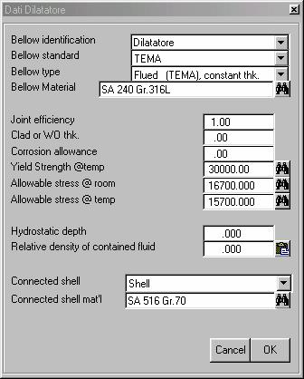
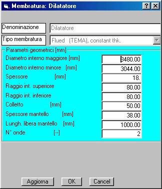

Panoramica
Il programma AsmeVip consente di eseguire i calcoli di progetto meccanico e di verifica di recipienti a pressione e di scambiatori di calore a fascio tubiero. La normativa di riferimento è costituita dai codici ASME VIII div.1 & 2 e TEMA.
Il programma è dotato di funzionalità avanzate, quali:
· ricerca di soluzioni ottimizzate in fase di progetto
· calcolo delle MAWP;
· calcolo della pressione di prova idraulica;
· calcolo delle eventuali esenzioni dalle prove di resilienza;
· compilazione automatizzata del rapporto di verifica dell'apparecchio.
Guida in linea
Il programma AsmeVip è dotato di una Guida in linea che può essere chiamato dal menu '?/Aiuto in linea'.
Molte finestre dell'applicazione presentano nella barra del titolo il bottone con il punto interrogativo per il richiamo di un argomento particolare della guida. Ciò si ottiene cliccando prima su detto bottone e poi su una zona della finestra per la quale si desiderano informazioni specifiche. E' inoltre possibile richiamare la finestra della guida in linea premendo il tasto F1.
Il Menu della finestra principale
Menu File
Menu Dati
Menu Compilazione Tabelle
Dati di progetto
Tabella materiali
Tabella MAWP
Calcolo pressione P.I.
Tabella requisiti resilienze
Menu Preferenze
Aree di lavoro
Tipo di lavori
Stampa libreria
Gli oggetti della finestra principale
Il pannello della struttura
Il pannello della struttura rappresenta simbolicamente la composizione dell'apparecchio, fatto di membrature, con eventuali aperture, appartenenti ad uno dei due lati, o al lato intermedio.

Il pulsante  fa apparire la maschera dei dati relativa alla
membratura o all'apertura selezionata nel pannello della struttura. Per
selezionare una membratura bisogna cliccare sull'icona corrispondente: il nome
della membratura appare colorato di colore blu.
fa apparire la maschera dei dati relativa alla
membratura o all'apertura selezionata nel pannello della struttura. Per
selezionare una membratura bisogna cliccare sull'icona corrispondente: il nome
della membratura appare colorato di colore blu.
Il pulsante  lancia il calcolo della membratura selezionata, e fa
doppio impiego con il menu 'Calcoli/Calcola
membratura'.
lancia il calcolo della membratura selezionata, e fa
doppio impiego con il menu 'Calcoli/Calcola
membratura'.
Il pulsante  influisce solo sulla
visualizzazione dell'albero della struttura, consentendo di rendere visibili
tutti gli elementi di ogni livello
influisce solo sulla
visualizzazione dell'albero della struttura, consentendo di rendere visibili
tutti gli elementi di ogni livello
Azioni del mouse sull'albero della struttura
· Il nome della membratura può essere cambiato, oltre che nella maschera dei dati di ogni membratura, anche cliccando sul nome a destra dell'icona.
· Alcune membrature possono essere spostate da un lato ad un altro trascinandole con il pulsante destro del mouse
Il pannello del rapporto
La composizione del rapporto di calcolo che viene memorizzato durante l'esecuzione dei calcoli è visibile nel pannello del rapporto:

Il tipo indica la membratura che è stata calcolata, mentre l'elemento riporta la denominazione della membratura assegnata dal progettista.
Se non è stato richiesto il calcolo di una singola apertura, tutte le aperture presenti su di una membratura vengono automaticamente calcolate in sequenza dopo la membratura stessa, e non vengono menzionate nel pannello del rapporto. Una sintesi dei risultati dei calcoli effettuati è riportata nel pannello dei risultati
L'opzione 'Con indice e intestazioni' può
essere selezionata solo prima dell'effettuazione dei primo calcolo, o dopo aver
cancellato i dati memorizzati per il rapporto con il pulsante 
Nel caso che detta opzione sia stata selezionata, il rapporto sarà compilato su fogli squadrati con logo FBM, sarà dotato di una pagina di guarda, conterrà un indice automatico dei capitoli e le pagine saranno numerate. Inoltre sarà possibile accedere alle diverse operazioni previste nel menu Compilazione Tabelle.
In caso contrario si otterrà un rapporto senza prefincatura delle pagine, e senza numerazione.
La casella di testo con etichetta 'File' riporta il nome e il cammino completo del file che riceverà il rapporto in formato RTF per WinWord. Benché sia possibile cambiare il nome e la posizione di detto file, il comportamento normale prevede di lasciare intatta l'impostazione predefinita.
I pulsanti  e
e  richiamano WinWord
per visualizzare, ed eventualmente stampare, il rapporto di calcolo.
richiamano WinWord
per visualizzare, ed eventualmente stampare, il rapporto di calcolo.
Il pulsante  permette la visualizzazione del rapporto
di calcolo completo, costituito dai capitoli elencati nel pannello, e nella
forma determinata dalla selezione dell'opzione 'Con indice e intestazioni'
permette la visualizzazione del rapporto
di calcolo completo, costituito dai capitoli elencati nel pannello, e nella
forma determinata dalla selezione dell'opzione 'Con indice e intestazioni'
Il pulsante  è attivo solo nel caso di selezione
dell'opzione 'Con indice e intestazioni', e permette la visualizzazione di un
determinato capitolo, selezionato nella lista del pannello.
è attivo solo nel caso di selezione
dell'opzione 'Con indice e intestazioni', e permette la visualizzazione di un
determinato capitolo, selezionato nella lista del pannello.
Il pannello dei risultati
Vengono qui riportati, durante l'esecuzione dei calcoli, i risultati fondamentali delle verifiche
Dati Generali
A seguito della creazione di un nuovo progetto o dell'apertura di un progetto esistente (menu 'File/Apri') appare automaticamente la finestra seguente (essa può essere richiamata in seguito tramite il menu 'Dati/Dati Generali'):

Load case, Item number
Si tratta di dati informativi che non hanno alcuna influenza sui calcoli
Number of sides
Numero di lati dell'apparecchio. Per maggiori dettagli vedi Numero di lati
Unit system
Scelta del sistema di unità di misura
Hydr. Test calculations
Selezionare quando si desidera eseguire le verifiche in prova idraulica. Vedi Calcoli in prova idraulica
MAWP calculations
Se questa opzione viene selezionata, al termine del calcolo di verifica di ogni membratura e di ogni apertura viene eseguito in automatico il calcolo delle MAWP nelle quattro condizioni Cold & New, Hot & New, Cold & Corroded, Hot & Corroded. Questi valori vengono conservati a livello globale dell'apparecchio, e vengono utilizzati per compilare la tabella delle MAWP, ed eventualmente calcolare il valore della pressione di prova idraulica.
Non uniform Design Temperatures
Se si seleziona questa opzione sarà possibile assegnare ad ogni membratura una temperatura di progetto specifica. In caso contrario tutte le membrature di un lato erediteranno la temperatura di progetto definita per quel lato. Le membrature appartenenti al lato intermedio erediteranno la maggiore tra la temperatura di progetto lato tubi e quella lato mantello.
Special
requirements for the reinforcement of the openings
Molti clienti specificano requisiti addizionali rispetto ai requisiti minimi del Codice per il progetto del rinforzo delle aperture. Per maggiori dettagli vedi Requisiti sul rinforzo delle aperture
Dati generali relativi ai lati
Design
according to:
Vessel
inner diameter
Questo dato serve solo per l'applicazione delle norme TEMA relative agli spessori minimi. Esso è utilizzato anche nel calcolo del battente idrostatico. Il diametro effettivo di ciascuna membratura (cilindrica e non) sarà specificato nei dati relativi alla singola membratura.
Vessel material
Questo dato identifica preliminarmente il tipo di materiale del vessel. Esso serve per l'applicazione di alcune norme TEMA, che dipendono dal fatto se il materiale è acciaio al C, inossidabile, o forgiato.
Nb of
low temperature conditions
Test
pressure
Relative density of
contained fluid
Number of
members
Si inserisce qui il numero di membrature presenti sul lato in questione. Le membrature vengono tutte inizializzate come cilindri. Sarà poi possibile trasformare la singola membratura nel tipo desiderato tramite il menu 'Dati/Concerti'
Numero di lati
Uno scambiatore di calore possiede tipicamente due lati; il lato tubi ed il lato mantello.
Un recipiente costituito da una sola camera a pressione possiede un lato solo.
Se si seleziona l'opzione '2 lati', il programma amministra un terzo lato fittizio, che serve a raggruppare le membrature che sono bagnate sia dal lato tubi che dal lato mantello.
Le scelte effettuate sono rappresentate nel pannello della struttura.
Calcoli in prova idraulica
Un primo effetto della selezione di questa opzione (vedi finestra Dati Generali) è l'ottenimento del calcolo automatico della pressione di prova idraulica, secondo UG-99(b) o (c), secondo la scelta effettuata.
Un secondo effetto riguarda l'esecuzione di alcune verifiche nella situazione di prova idraulica, come appresso dettagliato.
Il codice ASME-VIII div.2 impone la verifica delle tensioni nella situazione di prova idraulica, e assegna dei limiti ammisibili specifici.
Al contrario, il codice ASME-VIII div.1 non richiede l'esecuzione di verifiche il prova idraulica, né fornisce limiti specifici. Tuttavia può essere necessario eseguire anche in questo caso delle verifiche di resistenza, che chiameremo 'indirette'. La verifica indiretta in P.I. si esegue quando la pressione di prova idraulica è stabilita secondo UG-99(c), cioè è basata sulla MAWP in condizioni nuove a freddo, moltiplicata per 1.5. In questo caso può essere necessario (UG-99(c): the inspector shall reserve the right to require the manufacturer or the designer to furnish the calculations used for determining the hydrostatic test pressure for any part of the vessel) presentare le verifiche anche nella suddetta condizione (oltre che in condizioni di progetto o per la MAWP in condizioni calde e corrose).
In entrambi i casi sopra citati, le verifiche andranno eseguite impostando i valori opportuni di pressioni e temperature nella finestra dei dati generali, ed eventualmente utilizzando lo strumento del menu 'Calcoli/Calcola tutto'.
E' importante rendersi conto che l'opzione 'Calcoli in Prova Idraulica' della finestra Dati Generali non riguarda l'esecuzione di verifiche di stabilità in prova idraulica, bensì ciò che viene esposto nei pragrafi seguenti.
Normalmente, esiste una sola membratura che può essere dimensionata dai carichi in prova idraulica piuttosto che da quelli di progetto: l'accoppiamento flangiato.
Ciò accade perché in tal caso non è sufficiente assicurarsi che le tensioni siano ammissibili, ma bisogna anche verificare che le deformazioni sotto carico delle flange siano sufficientemente contenute, al fine di garantire la tenuta stagna.
Il programma AsmeVip consente di eseguire anche questo tipo di verifica. Per maggiori dettagli vedi Calcoli di P.I. + progetto
Requisiti addizionali sul rinforzo delle aperture
MAWP bocchelli
Il requisito addizionale più spesso specificato dai clienti riguarda la richiesta che la MAWP delle aperture per i bocchelli non sia inferiore alla MAWP del mantello che li sopporta.
Tale requisito non è gestito esplicitamente da AsmeVip, e quindi, all'occorrenza, bisogna seguire la procedura appresso indicata.
· impostare tutti i dati dell'apparecchio
· selezionare l'opzione 'Rapporto con indice e intestazioni'
· eseguire le verifiche, e aggiustare i dati dimensionali fino a che esse non siano tutte soddisfatte. Può essere utile, in questa fase, accedere al menu 'Calcoli/Calcola tutto'.
· compilare la tabella delle MAWP, accedendo al menu 'Compilazione tabelle/tabella MAWP'
· ispezionare la tabella e rinforzare le aperture fino a quando le relative MAWP risultino non dimensionanti.
Ovviamente, è anche possibile eseguire questo compito a livello della singola apertura, poiché le MAWP calcolate vengono anche visualizzate sullo schermo nel corso dei calcoli.
100% of vessel thk. reinforced
Questo requisito, che può essere selezionato dalla casella a discesa della finestra dei dati generali, impone di non considerare, nel computo delle aree di rinforzo, l'eccesso di spessore del mantello rispetto al minimo di calcolo.
Tipi di membrature
Cilindro
Cono
Conoide
Fondo
Grande Fucinato
Per 'Grande Fucinato' si intende uno dei seguenti:
· Flangia
· Coperchio piano
· Coperchio con grande apertura secondo App.14
La maggior parte di queste membrature sono normalmente accoppiate fra di loro, o con l'estensione flangiata di una piastra tubiera, tramite un giunto bullonato.
I bulloni e la guarnizione sono gestiti come attributi di ciascuna membratura, tuttavia il programma gestisce anche gli accoppiamenti tra membrature, in modo da riconoscere l'unicità dei bulloni e, eventualmente, della guarnizione di un giunto.
Nel caso del presente tipo di membratura la maggior parte dei dati geometrici di dettaglio è fornita tramite le schede che appaiono dopo aver attivato la procedura di calcolo. Tuttavia il modo in cui verranno presentate dette schede dipende dalla corretta imputazione dei seguenti dati di configurazione.

Member identification
Nome della membratura, che apparirà sul pannello della struttura, nel rapporto di calcolo, e nelle finestre dei membri accoppiati (vedi oltre).
Member material and bolt material
Tramite questi pulsanti si accede alla libreria Libmat
Member type
I tipi di membrature previsti sono i seguenti:
Loose without hub

Integral

Loose with hub

Optional calculated as
Loose
Optional calculated as
Integral
Bolted flat cover
Coperchio piano imbullonato, con o senza piccole aperture
Flat head with large
opening and inner hub

Flat head with large
opening without inner hub

Reverse flange per App. 2-13

Lap joint loose type flange
Calculation type
Sono previste tre possibilità:
Progetto
Ove la geometria del fucinato non fosse ancora completamente definita, scegliere questa opzione, in quanto, durante la successiva fase di calcolo, sarà possibile utilizzare le diverse opzioni di calcolo automatico offerte del programma.
Verifica
Tutti i dati geometrici del fucinato, dei bulloni e della guarnizione, sono noti, e quindi, se non già registrati durante un passaggio di calcolo precedente, sono da inserire manualmente durante la successiva fase di calcolo.
Prova Idraulica + progetto
Questa possibilità si presenta solo se nella finestra dei dati generali è stata selezionata l'opzione 'Calcolo in prova idraulica'. Se viene selezionata, verrà esguito prima un calcolo nelle condizioni di prova idraulica, il quale sarà utilizzato per:
· Calcolare il tiro bulloni da specificare per il serraggio prima della prova idraulica.
· Verificare che gli sforzi siano ammissibili nella flangia (ammissibile: 90% dello snervamento, se non altrimenti specificato) e nei bulloni (ammissibile: vedi 'Frazione Sy in prova idraulica')
Verrà poi effettuato il calcolo nelle condizioni di progetto.
Bolt load option
Talvolta vengono specificati dei requisiti addizionali ai requisiti minimi del Codice per il calcolo del carico di progetto trasmesso dai bulloni alle flange.
Se ciò non ricorre, si sceglierà l'opzione ASME
Sono previsti dal programma due casi di requisiti addizionali:
· Full bolt
· Fluor Daniel per i quali si rimanda all'appendice teorica.
Disuniformità tiro bulloni
Il programma AsmeVip determina il carico di serraggio dei bulloni. Nel far questo si tiene conto del fatto che la procedura di serraggio bulloni non potrà in nessun caso dare un risultato perfetto in termini di raggiungimento su ogni bullone del carico specificato, bensì si otterranno alcuni bulloni che eserciteranno un carico inferiore alla media, ed altri un carico superiore.
Il fattore di disuniformità è definito come il rapporto tra il carico realizzato sul bullone più caricato ed il carico medio.
Il valore da assumere per questo rapporto è ovviamente funzione della procedura operativa adottata per il serraggio; tuttavia, in mancanza di informazioni specifiche, si raccomandano i valori seguenti:
· per serraggio tramite martinetto idraulico assiale: 1.1
· per serraggio tramite chiave dinamometrica o verricello: 1.3
Frazione Sy in prova idraulica
Questo valore è rilevante nel caso di scelta dell'opzione 'Calcoli in Prova Idraulica', e di attivazione della procedura 'Calcolo P.I. + Progetto'.
Esso rappresenta il rapporto tra la tensione ammessa nei tiranti durante la prova idraulica e il carico di snervamento. Un valore indicativo da assumere è 0.67.
Nota: Nel caso di tiranti in materiale inossidabile è particolarmente importante eseguire il Calcolo P.I. + Progetto, in quanto in tal caso può essere più facilmente che in altri casi la condizione di prova idraulica quella dimensionante per le flange e per i tiranti stessi. Se si segue la descritta procedura di progetto si può ragionevolmente pensare di ottenere una protezione sufficiente dal rischio di perdite durante la prova idraulica.
Membro accoppiato
Tramite questa casella a discesa si possono creare gli opportuni collegamenti tra i due membri di un accoppiamento bullonato. Le caratteristiche dimensionali degli elementi a comune (bulloni e guarnizione) saranno così mantenute omogenee tra i due membri, a seguito delle possibili variazioni introdotte dal progettista su uno di essi.
Nota. Nel caso di flange che serrano una piastra tubiera è particolarmente importante utilizzare questa opzione del programma, in quanto l'univocità del tiro dei tiranti è garantita dal programma malgrado la posssibile diversità delle pressioni di progetto delle due flange accoppiate.
Tiranti prigionieri
La scelta di questa opzione è utile per comunicare al programma quando non deve essere mantenuta una distanza di rispetto tra il bulloni e lo hub della flangia.
Calcolo analitico della coppia di serraggio
Se questa opzione è selezionata si otterrà un controllo totale sul calcolo della coppia di serraggio bulloni e/o del tiro con martinetto idraulico, tramite la finestra 'Serraggio tiranti' Inoltre, il calcolo della coppia di serraggio sarà eseguito secondo la teoria esatta, in funzione del coefficiente d'attrito dado/rondella e vite/madrevite.
In caso contrario, il calcolo del tiro di serraggio sarà eseguito secondo la stessa teoria (vedi 'Teoria del serraggio bulloni'), ma non si potranno modificare i parametri del calcolo. Inoltre, il calcolo della coppia di serraggio sarà eseguito secondo la seguente formula semplificata:

dove:
· M: coppia di serraggio
· K1: Fattore di rilassamento
· K2: Fattore di disuniformità
· W: Carico di serraggio teorico minimo per la tenuta
· d: Diametro nominale del tirante
La suddetta formula non tiene conto delle caratteristiche geometriche specifiche della filettatura, e quindi può essere considerata un'approssimazione mediamente valida per il caso di uso di grasso al Molycote
Verifica del sovraccarico guarnizione
Esecuzione commentata
Number of openings
Teoria del serraggio bulloni
Il Codice impone un metodo per il calcolo del carico di progetto dei tiranti, al fine della verifica dell'accettabilità delle corrispondenti tensioni generate nei bulloni stessi e nei membri serrati. Come noto, tale metodo prevede il calcolo del carico in esercizio, Wm1,e del carico di assetto guarnizione, Wm2. Il carico di progetto, W, è funzione dei precedenti e della sezione retta totale istallata dei bulloni, in modo da tenere conto, in modo semplificato, del fatto che, se la sezione istallata è esuberante, può accadere che, al serraggio, i bulloni esercitino un carico superiore a quello minimo necessario per la tenuta e per l'assetto della guarnizione.
Il Codice nulla dice circa il carico di serraggio bulloni per la prova idraulica. Tuttavia si può osservare che:
· la procedura per il calcolo di Wm1 può essere correttamente applicata sostituendo alla pressione di progetto la pressione di prova idraulica;
· il valore di Wm2 rimane inalterato in quanto non dipende dalla pressione, ma solo dalla natura della guarnizione;
· un carico di progetto W in prova idraulica ottenuto applicando la procedura valida per il caso di progetto non avrebbe senso, in quanto la procedura mette in gioco il valore delle tensioni ammissibili per la bulloneria, ma tali valori non sono definiti (almeno in div.1) né per la situazione di prova idraulica, né, tanto meno, per la situazione di serraggio tiranti.
E' di fondamentale importanza comprendere che il Codice non pretende di valutare, tramite il carico di progetto W, il carico effettivo totale al quale lavora la bulloneria, bensì esso mira alla determinazione, in sicurezza, del solo carico primario, cioè della frazione del carico totale che fa equilibrio ai carichi dovuti alla pressione. La frazione secondaria del carico totale, cioè quella generata da:
· il precarico introdotto al serraggio
· le variazioni di carico prodotte dalle deformazioni dei membri serrati
· le variazioni di carico prodotte da disuniformità di temperatura o da differenze nei coefficienti di espansione termica non è sottoposta (in div.1) ad alcun limite, né vengono dati metodi per la sua valutazione. La ragione di ciò è che un valore eccessivo dei carichi secondari, non può normalmente portare al collasso della barriera di contenimento della pressione, ma, tutt'al più, alla generazione di deformazioni plastiche permanenti nella bulloneria e nei membri serrati, e quindi alla perdita della tenuta stagna.
Quanto sopra detto chiarisce che il carico di serraggio tiranti può essere, e normalmente deve essere, molto superiore al carico calcolato applicando la procedura Wm1 con il valore di pressione della prova idraulica. Tale carico è indicato in AsmeVip con Wm1HT
Il carico di serraggio W, in AsmeVip, è dato da:
Nel caso di serraggio con martinetto idraulico è necessario applicare anche il fattore K3 (pari a 1.3 circa), ovvero fattore di rilassamento Pilgrim, da non confondersi con il fattore di rilassamento con apparecchio in pressione.
Finestra 'Serraggio Tiranti'
La seguente finestra si apre automaticamente alla fine dell'esecuzione della procedura di calcolo, se:
· Sono stati richiesti i calcoli in prova idraulica
· E' stata selezionata l'opzione Calcoli in P.I. più Progetto

Questa finestra è ad aggiornamento automatico istantaneo, cioè i calcoli vengono rieseguiti ogni volta che il progettista cambia qualche dato.
Le caselle a sfondo bianco rappresentano i dati da fornire; quelli a sfondo giallo sono valori calcolati dal programma, o ottenuti da librerie (premendo i pulsanti con cannocchiale). Tuttavia anche i dati a sfondo giallo possono essere variati (da progettisti esperti).
I vari pannelli assumono un colore di fondo rosso quando alcuni dei dati contenuti non sono validi.
Pannello 'Carichi tiranti a codice'
Pannello 'Carichi su un tirante per la tenuta in P.I.'
Carico teorico minimo W
Carico obiettivo a vuoto
Fattore di rilassamento K1
Pannello 'Serraggio con martinetto idraulico assiale'
Fattore di disuniformità K2
Fattore di rilassamento K3
Carico sotto martinetto
Pannello 'Serraggio con chiave / verricello'
Coefficienti di attrito
Fattore globale di coppia
Pannello informativo
Esecuzione autonoma di 'Serraggio Bulloni'
La procedura di calcolo del carico e della coppia di serraggio bulloni può essere lanciata anche indipendentemente dal programma AsmeVip. E' sufficiente accedere al menu 'Calcoli meccanici/Serraggio bulloni' della finestra di Lancio. In tal caso apparirà la finestra sotto riprodotta, tramite la quale è possibile gestire il salvataggio su disco dei soli dati relativi al problema di serraggio (file con estensione .TIR)
Per ogni informazione non contenuta nel presente capitolo fare riferimento a Finestra 'Serraggio bulloni'
Tipo di calcolo
Nella versone attuale è opportuno scegliere sempre l'opzione ASME.

Rilassamento bulloni
E' un errore piuttosto diffuso quello di ritenere che il carico della tiranteria aumenti man mano che si aumenta la pressione interna nell'apparecchio, a partire dal valore ottenuto come precarico alla fine della procedura di serraggio. In realtà, in questo caso l'intuizione induce in errore.
La verità è che, sotto un'opportuna ipotesi semplificativa, il carico sulla bulloneria rimane costante al variare della pressione. L'ipotesi è che la rigidezza delle parti serrate sia molto superiore alla rigidezza dei bulloni. Ciò significa che il cedimento sotto carico delle flange a livello del cerchio bulloni deve essere molto più piccolo dell'allungamento elastico dei bulloni medesimi.
L'ipotesi semplificativa sopra esposta non è realizzata in molti casi pratici; ne consegue che il carico sui tiranti varia durante l'applicazione della pressione. A seconda delle caratteristiche geometriche dei membri serrati esso può anche aumentare, ma normalmente esso diminuisce all'aumentare della pressione. Tuttavia, le procedure di dimensionamento meccanico del Codice possono ignorare, in tutta sicurezza, questo fenomeno per le ragioni esposte nel Cap. 'Teoria del serraggio bulloni'.
Questo fenomeno non può, viceversa, essere ignorato quando il problema è di determinare il carico di serraggio che garantisce la tenuta stagna, in quanto è evidente che se ci si limita a istallare a vuoto il carico teorico che garantisce la tenuta (il carico Wm1 del Codice, calcolato per la pressione di prova idraulica), e se poi accade che tale carico diminuisce, ovvero si rilassa, quando si applica la pressione, il solo risultato certo è una perdita in prova idraulica.
Un possibile rimedio al rischio sopra esposto consiste nel sovradimensionare le flange, i coperchi, e le piastre tubiere flangiate, in modo da aumentarne la rigidezza, e quindi diminuire, per quanto detto sopra, l'ampiezza del fenomeno di rilassamento. In ogni caso, è necessario assumere un fattore di sicurezza nella determinazione del carico di serraggio a vuoto, che, nella prassi corrente, assume la figura di un fattore forfettario e costante (dell'ordine di 1.1/1.3), ma che, con il programma AsmeVip, può essere calcolato analiticamente e caso per caso. Esso è denominato K1, Fattore di rilassamento.
Si è ritenuto di introdurre la determinazione analitica di K1 in AsmeVip, anche se non in tutti i casi la teoria soggiacente è completamente validata, poiché tale fattore presenta valori molto sparpagliati da caso a caso, e quindi l'adozione di un fattore forfettario di sicurezza:
· se fatta in modo prudenziale rischia di essere indebitamente onerosa in termini di spessori flange/coperchi (ovvero rischia di produrre danneggiamenti permanenti a causa di tiri eccessivi)
· se fatta senza troppi margini (caso di esperienza comuine in FBM) può produrre in molti casi sovraccosti dovuti all'aggiustaggio sperimentale, ovvero per tentativi successivi, del carico di serraggio, quando non addirittura più gravi problemi conducenti a interventi correttivi prima o dopo la spedizione dell'apparecchio.
Piastra Tubiera
Come noto, esistono diversi tipi di piastre tubiere (per fasci a teste fisse, a testa flottante, per tubi ad U, con/senza flangiature),e per ciascuno di essi esistono algoritmi di calcolo specifici. Tutti i casi possibili, e previsti dalle norme TEMA, sono trattati all'interno dell'oggetto 'Piastra Tubiera'.
In particolare, è importante tenere presente che, in tutti i casi in cui esistono due piastre (uguali o dissimili), e quando altri elementi dello scambiatore concorrono nelle verifiche delle piastre tubiere (trazione/compressione nei tubi e nel mantello, dilatatore, nel caso dei fasci a teste fisse), il presente componente 'Piastra Tubiera' è da intendersi come 'Fascio Tubiero'.
Una conseguenza di questo fatto è che si può inserire in un'apparecchio solo una 'Piastra Tubiera', in quanto il programma AsmeVip non gestisce apparecchi dotati di più di un fascio tubiero.
Dati Generali Piastre Tubiere
I dati che compaiono in questo pannello possono variare in funzione del tipo di fascio tubiero selezionato nella casella a discesa 'Configuration'. Di seguito verranno elencati tutti i dati che possono comparire nelle diverse situazioni.

Configuration
Viene qui scelto il tipo di fascio/piastra tubiera, fra le sei opzioni proposte.
Calculation type
Si può scegliere tra Calcoli di progetto e calcoli di verifica. Questa scelta ha scarsa influenza sullo svolgimento dei calcoli; è normalmente adeguato mantenere in ogni caso l'impostazione Calcoli di progetto.
Dati relativi ai tubi scambiatori
I dati di questa sezione sono espressi unicamente in millimetri.
Nel caso che sia stato preliminarmente inserita la membratura Tubi scambiatori, è possibile richiamare in questa finestra
i dati colà inseriti premendo il pulsante .
.
Diametro esterno
Passo
Lunghezza
Si tratta della lunghezza effettiva. Il programma si incarica di sottrarre lo spessore delle piastre, quando applicabile.
Tipo di passo
DL (RCB-7.133)
Si tratta del diametro equivalente per il calcolo dello spessore della
piastra tubiera al taglio. Ove non altrimenti noto, può essere calcolato dal
programma Traccia,
richiamabile da questa finestra con il pulsante .
.
Numero tubi
Lunghezza libera tubi
Piastre diverse?
Questa scelta è applicabile al caso dei fasci a teste fisse, e riguarda il caso previsto da RCB-7.166 FIXED TUBESHEETS OF DIFFERING THICKNESSES.
No
Questa è l'opzione preimpostata
Si, normale
Vi è simmetria rispetto al piano mediano perpendicolare all'asse dell'apparecchio. Quindi le piastre tubiere differiscono solo per lo spessore, le caratteristiche fisiche, e i dati di temperaura. Questo è il caso previsto dalla Nota a RCB-7.166.
Si, speciale
Le piastre possono anche differire per configurazione (flangiature o collegamenti integrali) e per la presenza dell'estensione per bullonatura. In questo caso lo step (4) di RCB-7.166 è stato emendato (vedi Appendice).
Rapporto spessori estensione/centro piastra
Questo valore è richiesto nel caso di piastre tubiere per tubi ad U con estensione flangiata, calcolate secondo RCB-7.1342
Il programma AsmeVip è in grado di effettuare il progetto, oltre che la verifica, delle piastre tubiere con estensione flangiata. Tuttavia bisogna notare che esistono infinite soluzioni minimali ammissibili al problema di progetto, ciascuna caratterizzata da un diverso rapporto tra lo spessore assunto per l'estensione e lo spessore al centro piastra. Se si imposta il valore di tale rapporto pari a zero, il programma ricercherà la soluzione ottimale dal punto di vista della minimizzazione dello spessore nella zona centrale. Se invece si imposta il rapporto ad un valore compreso tra 0.5 e 1, allora il programma presenterà gli spessori minimi che rispettano il rapporto impostato.
Dilatatore accoppiato
Questo parametro è richiesto nel caso di fasci tubieri a teste fisse.
Ove sia stato preliminarmente introdotto un dilatatore nel Lato Mantello, la casella a discesa presenterà tre possibilità:
Nessun dilatatore
Spring-rate manuale
Il calcolo del fascio tubiero sarà eseguito in funzione del valore di rigidezza fornito manualmente. Tale valore sarà fornito successivamente nelle maschere attivate dalla richiesta di esecuzione della procedura di calcolo (vedi pulsante Calcola). In questo caso sarà necessario fornire anche il diametro massimo interno presunto del dilatatore (vedi oltre).
'Nome preimpostato della membratura dilatatore'
Se si seleziona questa impostazione il calcolo fascio tubiero/dilatatore verrà eseguito in modo completamente integrato. Non sarà quindi necessario eseguire un calcolo separato del dilatatore. E' prevista inoltre una procedura automatizzata di ricerca delle geometrie ammissibili per il dilatatore.
Diametro interno massimo
Nel caso di
fasci tubieri a teste fisse, con dilatatore definito da uno spring-rate fornito
manualmente, è necessario specificare anche il diametro interno massimo dello
stesso.
Nel caso di
dilatatori definiti esplicitamente, questo dato è incluso fra i dati geometrici
del dilatatore.
Calcolo della flessione nell'estensione flangiata
Si tratta di
un requisito addizionale alle norme TEMA, consistente nel tenere conto dello
stato di tensione (componente radiale) generato dal momento flettente,
considerando l'estensione flangiata come una mensola, oltre che dello stato di
tensione (componente circonferenziale) generato dal momento torcente,
considerando l'estensione flangiata come una trave anulare (vedi Appendice).
Normalmente
questa opzione non deve essere selezionata.
Calcolo automatico del tiro bulloni
Il tiro dei
bulloni nell'estensione flangiata è normalmente desunto dal calcolo,
preliminarmente effettuato, del flangione accoppiato. In questo caso bisogna
deselezionare la presente opzione, ed i dati del calcolo risulteranno
preimpostati nel pannello dei dati sulla
giunzione.
Esecuzione commentata
Questa opzione
riguarda la messaggistica rivolta al progettista durante la fase di
calcolazione.
Stampa pienamente documentata
Selezionare
questa opzione se si desidera un rapporto che documenti passo-passo i calcoli
effettuati.
Dati di Progetto

Calcolo a pressione differenziale
In tutti i casi diversi da 'fascio tubiero con teste fisse', non vi sono commenti particolari da fare. Occorre solo fare attenzione al segno della pressione differenziale. Infatti, nel caso di piastre tubiere per tubi ad U con estensione, non è la stessa cosa applicare la pressione differenziale dal lato cassa (segno +), o dal lato mantello (segno -). Il programma AsmeVip esegue entrambe le verifiche, indipendentemente dal segno del valore della pressione differenziale, che può essere diverso dalla differenza delle due pressioni di progetto, e che andrà sempre imputato senza segno.
Nel caso di teste fisse, non ha senso applicare la pressione differenziale da un lato, e zero dall'altro (vedi RCB-7.165, "simultaneous action of both shell and tube side pressures"). Nasce quindi un problema quando il cliente specifica una pressione differenziale diversa dalle due pressioni di progetto. In questo caso il programma AsmeVip crea automaticamente tre casi di carico (vedi Nb of load conditions):
· 1) lato tubi: Pt;lato mantello: Ps
· 2) lato tubi: Pt;lato mantello: Pt-Pd
· 3) lato tubi: Ps-Pd;lato mantello: Ps
Nb of load conditions
Questo dato è presente solo nel caso di apparecchi a teste fisse. Oltre ai casi di funzionamento specificati dal cliente per la verifica delle dilatazioni differenziali tubi-mantello (sforzi longitudinali nei tubi e nel mantello, tensioni nelle piastre, carico sul giunto tubo-piastra, e, ove presente, verifica a fatica del dilatatore), è necessario includere una condizione di progetto, nella quale le pressioni siano quelle di progetto, gli ammissibili siano calcolati alle temperature di progetto, e le dilatazioni alle temperature di esercizio.
Dati sulle piastre tubiere

Casi particolari
Fascio estraibile/Piastra avvitata sul fondo cassa
Nel caso di piastra tubiera per tubi ad U con estensione flangiata lato mantello, il pannello dei dati assume il seguente aspetto:

L'opzione Piastra avvitata sul fondo cassa permette di specificare la geometria nella quale la piastra è fissata con prigionieri su di un risalto dell'anello fucinato alla base della cassa. In questo caso non sarà disponibile la finestra a discesa per la selezione del flangione accoppiato nel pannello dei dati sulle giunzioni flangiate.
Dati sul mantello

Dati sulle giunzioni flangiate
Se non è stata selezionata l'opzione di calcolo automatico del tiro bulloni, l'aspetto di questo pannello è il seguente:

Se invece è stata selezionata l'opzione di calcolo automatico del tiro bulloni, l'aspetto di questo pannello è il seguente:

Flange identification
La casella a discesa viene popolata con le membrature che possono essere candidate al collegamento flangiato con la piastra tubiera. La scelta di una di esse genera un collegamento permanente che trascina tutti i dati della membratura in questione.
Se si digita direttamente una descrizione nella casella, l'eventuale collegamento preesistente viene azzerato, e quindi sarà possibile introdurre localmente i dati relativi alla flangiatura.
Dati sui bulloni

Dati sulle giunzioni saldate

Member identification
La casella a discesa viene popolata con le membrature che possono essere candidate alla giunzione saldata con la piastra tubiera. La scelta di una di esse genera un collegamento permanente che trascina tutti i dati della membratura in questione.
Se si digita direttamente una descrizione nella casella, l'eventuale collegamento preesistente viene azzerato, e quindi sarà possibile introdurre localmente i dati relativi alla membratura collegata.
Dati sul fondo flottante
Tubi di scambio
La 'membratura' Tubi di scambio deve essere intesa come il set completo dei tubi scambiatori. Di conseguenza, in ogni apparecchio si può inserire una sola membratura 'Tubi di scambio'.

Lunghezza
Questo dato viene utilizzato nel calcolo della pressione critica esterna. Nel caso di tubi a U è corretto quindi inserire la lunghezza totale sviluppata, anche se, per grandi valori del rapporto lunghezza diametro, il risultato diviene insensibile al valore della lunghezza.
Raggio minimo di curvatura
Questo dato è utilizzato nell'applicazione di RCB-2.31 U-BEND REQUIREMENTS. Nel caso di tubi diritti questo valore può essere lasciato pari a zero.
Tipo di giunto
Tracciatura
Casella di testo
Questa casella riporta, se esistente, il nome ed il percorso completo del file di input al programma Traccia per l'elaborazione della tracciatura della piastra tubiera dell'apparecchio allo studio. Poiché non si può scrivere nulla in questa casella, il dato è visualizzato a scopo informativo.
Pulsante 
Esso permette di riportare nella finestra i dati relativi ai tubi contenuti nel file di input al programma Traccia
Pulsante 
Esso permette di richiamare il programma Traccia, allo scopo di elaborare o modificare la tracciatura.
Number of tube types
Nel caso di fasci tubieri con tubi di diametro/spessore/materiale dissimili, è possibile selezionare fino a tre tipi di tipi di tubo. Per ciascuno di essi saranno eseguite separatamente le verifiche a pressione interna ed esterna. Nel caso (improbabile) di un fascio a teste fisse, bisognerà porre attenzione a specificare nel pannello dei dati generali della Piastra Tubiera degli opportuni dati mediati.
Dilatatore
Sono trattati due tipi fondamentali
di dilatatore:
nonedilatatore flanged and flued tipo TEMA
nonedilatatore
a parete sottile tipo EJMA
Dilatatori flanged and flued
Il calcolo del dilatatore è basato sulla definizione di una geometria equivalente, in accordo a RCB-8.22 (Effective geometry constants).
In figura sono rappresentate le sette sezioni nelle quali sono presentate le verifiche strutturali.
Dilatatori EJMA (bellows)
Finestre dei dati e del calcolo
Dati


I dati relativi ai dilattori vengono inseriti o modificati tramite le due finestre sopra riportate, che si aprono automaticamente una di seguito all’altra.
Risultati
I risultati vengono presentati, nel caso di calcolo integrato del fascio tubiero a teste fisse (il calcolo viene lanciato a partire dalla membratura piastra tubiera) tramite le schede ‘Sintdil’ e ‘Dilat. n’.
Ottimizzazione del dilatatore
Escludi sez. 1
La sezione 1 del dilatatore equivalente non viene considerata nel calcolo dei fattori di danno delle geometrie esaminate. Può essere utile selezionare questa opzione nei casi in cui risulti difficile trovare una soluzione accettabile.
Setti Partitori
Aperture
Grande Fucinato
A seguito della pressione del pulsante 'Calcola' compare una finestra come quella qui riportata. L'esempio riguarda una flangia di tipo integrale; qualche differenza sarà possibile a seguito delle impostazioni fornite nella finestra dei dati del 'Grande Fucinato'.

Dati informativi
Schedario
In generale, ciascuna scheda può contenere dei dati di ingresso o dei risultati. I primi sono caratterizzati da una descrizione riportata su sfondo giallo. I secondi, forniti a titolo informativi, hanno una descrizione riportata su sfondo bianco, e non possono essere modificati manualmente.
Per alcune schede vengono fonite informazioni più dettagliate in capitoli appositi.
Pulsanti
Pagina 1
Alcuni dati sono precompilati (pressione e temperatura di progetto, corrosione), ma possono essere cambiati. Tuttavia i cambiamenti eventualmente apportati, pur essendo accettati per il calcolo in corso, non verranno memorizzati.
I restanti dati devono essere introdotti a questo livello, tuttavia non tutti sono necessari: i dati non necessari verranno proposti dal programma. I dati necessari sono:
· B, Diametro interno
· G, Diametro medio guarnizione
· h, Altezza dello hub
· g0
· g1
Pulsante 
Questo pulsante consente di lanciare la procedura di ottimizzazione del giunto flangiato, ed è disponibile solo per il tipo di calcolo 'Progetto'.
Per 'ottimizzazione del giunto flangiato' si intende la ricerca della geometria che minimizza il peso del fucinato (al lordo della lavorazione del codolo: anello fucinato di sezione retta a forma rettangolare), facendo variare tutti i parametri non elencati nella seguente lista dei dati necessari:
· Pressione e temperatura di progetto
· B, Diametro interno
· g0
Pagina 2

Pagina 3

Pagina finale

Verifica del diaframma saldato
Il diaframma saldato è una membratura secondaria. Ciò significa che essa non viene inserita esplicitamente, né appare nel 'pannello della struttura', bensì viene gestita automaticamente dal programma.
Il diaframma saldato viene aggiunto ai coperchi piani nel caso di scelta di una guarnizione tipo 'diaframma saldato', tramite i dati forniti nella pagina 3. Alla fine delle calcolazioni del coperchio piano apparirà la finestra seguente:
Calcolo di P.T./fasci tubieri
Fasci tubieri a teste fisse
A seguito della pressione del pulsante 'Calcola' compare una finestra come la seguente.

Dall'osservazione dell'esempio sopra riportato si può desumere che il caso in esame comporta due condizioni di carico e che il fascio non è dotato di dilatatore. Inoltre l'intestazione della finestra denuncia che sarà eseguito un calcolo in accordo all'App. AA del codice ASME.
Per vedere i risultati del calcolo è necessario esaminare le diverse schede presenti nella finestra.
Le schede Dati n
Un esempio di questa scheda è riportato all'inizio del capitolo; ne esiste una per ciascuna condizione di carico.
La scheda Sintesi
Le schede Piastra n
Le schede Mant. n
Le schede Dilat. n
Piastre tubiere per tubi ad U
A seguito della pressione del pulsante 'Calcola' compare una finestra come la seguente, nella quale compaiono già i risultati del calcolo.

I pulsanti 'Avanti' e 'Indietro'
Aperture
La flangia dei bocchelli
Le flange dei bocchelli conformi allo standard ANSI B16.5 non debbono essere calcolate in quanto è sufficiente la verifica del rating.
Ciò è vero anche nel caso dello standard ANSI B16.45 (flange di grande diametro), tuttavia le librerie del programma AsmeVip non comprendono ancora i ratings corrispondenti.
Inoltre, secondo alcune interpretazioni, i pressure-temperature ratings B16.5 non coprono il caso delle flange integrali e LWN, nemmeno nel caso in cui il progettista abbia preso cura di riprodurre (eventualmente ad abundantiam), nella parte superiore del bocchello, la geometria e le dimensioni della corrispondente flangia WN.
In sintesi, in tutti i casi di flange non B16.5, ed anche nel caso di flange integrali B16.5, può essere necessario eseguire la verifica della flangia in accordo a ASMEVIII div.1, App.2.
Nei casi suddetti il programma, al termine delle calcolazioni relative al rinforzo dell'apertura, chiede al progettista se vuole eseguire tale verifica:

In caso affermativo viene presentata la finestra per il calcolo del Grande Fucinato, già precompilata con i valori geometrici desunti dallo standard applicabile, ovvero registrati nel corso di una calcolazione precedente del bocchello attuale.
Il materiale dei tiranti e le caratteristiche della guarnizione devono tuttavia essere aggiunti manualmente (dopo di che risulteranno registrati permanentemente nel file .VIP), accedendo alla scheda di Pag.3, in quanto i corrispondenti standards (ad es. API-601) non sono stati ancora inseriti nelle librerie.
Pressure-Temperature Ratings
Nota per l'autore:elencare quali sono i ratings presenti in libreria, e come si fa a modificarli/aumentarli.